The heart of the festival — where families gather, heritage lives, and the desert becomes a home. We've told the Village's story from the inside, and we're ready to tell it bigger.
From our first camera in the dunes to managing one of the UAE's most iconic festivals across every platform — this is a relationship built on trust, performance, and a genuine love for Liwa.
Graphite Studio takes on full media coverage for Liwa International Festival — filmmakers, drone operators, video editors, and logistics team deployed for the entire 23-day run. The foundation of a long-term partnership is set.
The mandate expands. Social media management is added to the scope, with two dedicated accounts running simultaneously: @LiwaFest and @LiwaVillage. The dual-account strategy proves highly effective — Liwa Village's distinct identity resonates deeply with audiences.
The decision is made to merge both identities into a single festival account. While the overall content quality remains strong, the unique voice and dedicated audience of Liwa Village is lost — a learning that shapes our strategy going forward.
We return with our most ambitious proposal yet — re-establishing the dual-account strategy, expanding coverage to new locations and historical forts, launching new content formats (podcasts, interviews, heritage series), and bringing the full force of our team to the largest Liwa to date.
In its dedicated season, @LiwaVillage built a real community around the Village's family and heritage story. The figures below are drawn directly from that season's reporting — the proof behind bringing a dedicated Village account back for 2026–27.
In a single dedicated season, @LiwaVillage grew a loyal audience of nearly 30K followers and drove real engagement around the Village's family, heritage, and community story. For 2026–27, we're proposing to bring that dedicated voice back — bigger, and built on what we've learned. (@LiwaVillage runs alongside a coordinated @LiwaFest account, proposed separately.)
Dedicated Village account
Building on a proven base
A strong local following — families and communities who see the Village as a home-grown destination
Significant on-ground growth — a large, engaged real-world audience to convert and retain online
The Village's strongest channel — where family and heritage content travels furthest
The insights above describe today's audience. The plan below maps each priority segment for @LiwaVillage to how we reach it.
The Village's core audience is local UAE families, with the wider GCC as its natural regional growth tier — reached through Arabic-first and bilingual family content that keeps the experience authentic close to home while remaining accessible to Khaleeji visitors.
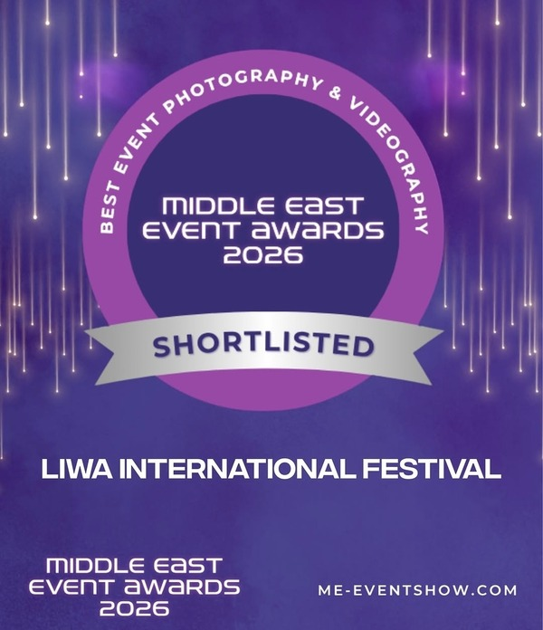
This recognition reflects the collective effort behind Liwa International Festival's visual identity. We are proud to have contributed to a production that earned international recognition — and deeply grateful to DCT Abu Dhabi for their trust, vision, and continued partnership, and to LINKVIVA for their exceptional event direction and collaboration throughout every season.
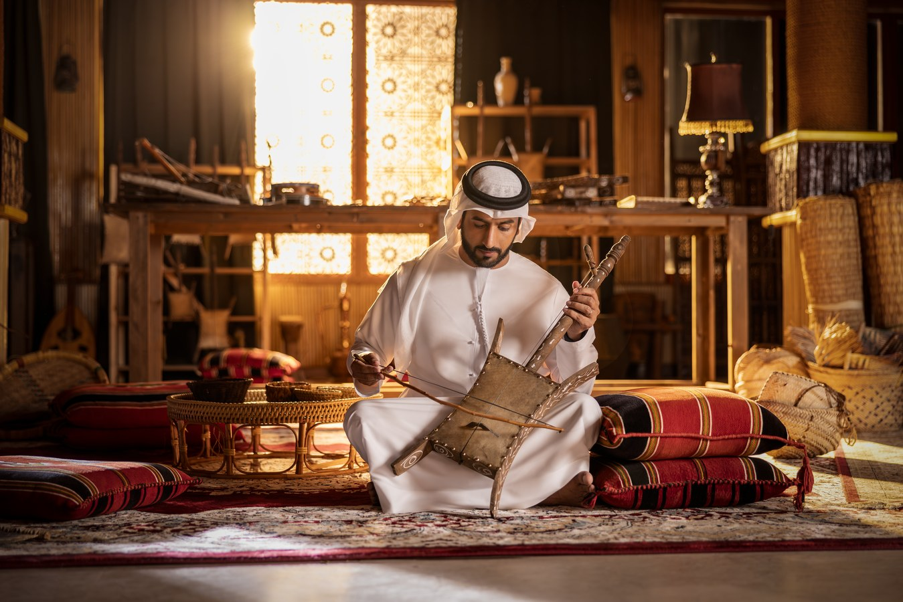
Managing Liwa's media coverage is one of the most logistically complex operations in UAE festival production. We've built the infrastructure to handle it seamlessly — for three years running.
From the moment the festival opens to the moment it closes, our team is on the ground — capturing, editing, reviewing, and publishing. Not the next day. Not the next week. The same day. Our delivery model is built on two commitments: real-time coverage as moments happen, and same-day delivery of edited content — every day of the festival.
Coordinate with event directors and DCT leads on the day's activities, key moments to capture, and any last-minute changes across all festival zones.
Filmmakers, drone operators, and photographers deployed across the Village simultaneously — the Souk, family zones, dining, heritage areas, and live performances.
Editors work in real-time as footage comes in. Reels and stories are cut, colour-graded, and ready for review before the day ends — not tomorrow.
Our office team handles the feedback loop, coordinates rounds of edits, and ensures everything goes live with flawless timing and captions — stories, reels, posts, all platforms.
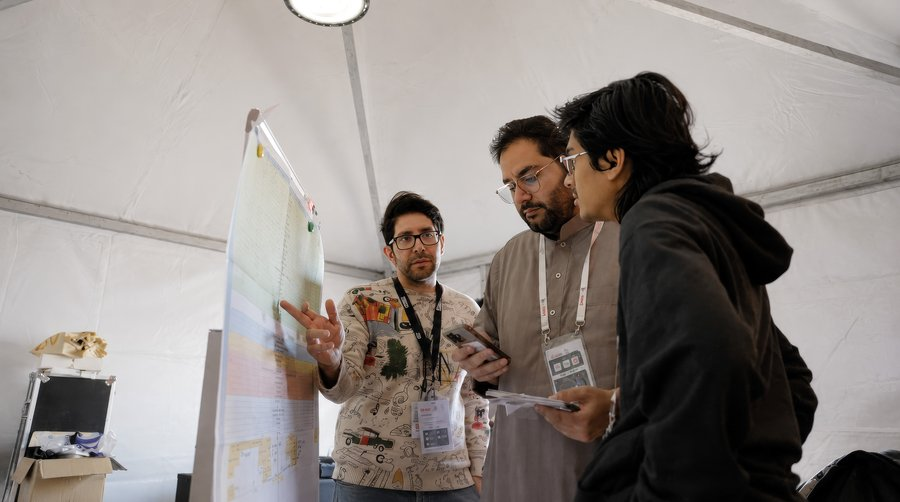
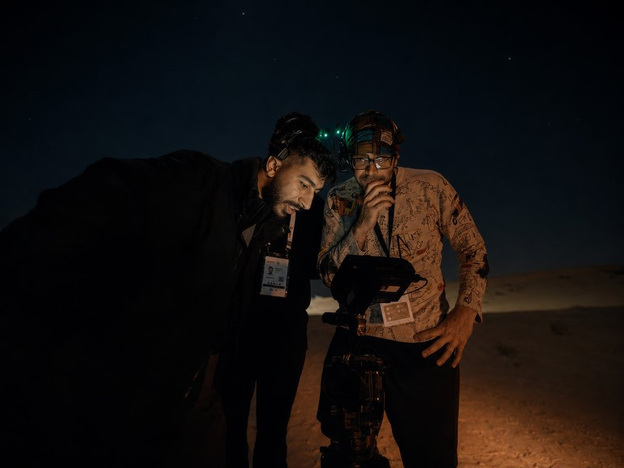
Creative direction & on-ground lead
Operations, scheduling & client liaison
On-ground logistics & team coordination
Multi-zone simultaneous coverage
Village zone & family coverage
Aerial coverage across all zones
Digital Imaging Technician — data management & asset flow
On-site, real-time editing suite
Same-day photo processing & delivery
Stories, real-time & vertical content
Equipment & team mobility across the Village
This is the Village's dedicated on-ground team. Five roles — Director, Project Manager, Drone Operator, DIT, and Photo Editor / Retoucher — are shared with the Festival team across both accounts.
Across 23 days and every zone, our coverage is built so the moments that matter are never missed — planned in advance, captured live, and turned around fast.
Daily shot lists built with DCT leads around scheduled highlights — live performances, zone openings, and family activities — so nothing is left to chance.
Dedicated, protocol-aware coverage for official visits, dignitaries, and high-profile appearances — captured with the context and quality they require.
Coverage of the Village's cultural and heritage activations — artisans, craft, and traditional experiences, told in an authentic Emirati voice.
We shoot the Village before it fills and after it quiets — the calm setup, golden-hour Souk, and late-evening warmth that crowds never see.
Dedicated coverage of sponsor and partner activations across Wanasa, Adrenaline, Tahadi and the Souk — capturing both the experience and the brand visibility.
The visitor's-eye view — rides, dining, gaming, and family zones — the experiential content that turns interest into a family visit.
Roaming coverage for the spontaneous moments — crowd reactions, candid joy, the unplanned scenes that often become the most shareable content.
Our production model is built around continuous presence, parallel workflows, and zone-based flexibility — allowing us to capture everything simultaneously and deliver without delay.
Camera teams are distributed across the Village daily — the Souk, Shams Liwa, Meydan, Wanasa, Adrenaline & Tahadi zones, dining, heritage areas, and performances. A standby team remains available for urgent requests, VIP moments, and last-minute coverage needs.
Selected files are transferred to editors while camera teams continue shooting. Editing begins mid-day, not at the end of it — enabling same-day turnaround across all content formats without a bottleneck.
Every production day begins with a schedule review by the Director and Project Manager. Team members are briefed, zones assigned, and priorities confirmed in line with live event requirements and client direction.
All captured content is catalogued, backed up, and delivered in an organized structure — ready for client use, stakeholder access, archiving, and future reference.
While the on-ground team captures the magic, our office team keeps the digital engine running — publishing, analysing, responding, and refining. 24 hours a day during the festival season.
End-to-end oversight of content pipeline, timelines, client coordination, and delivery schedules.
Creating on-brand visuals, story templates, event graphics, and all static social assets.
Crafting captions, scripts, hashtag strategy, and bilingual copy for every platform and format.
Platform-native experts who understand the algorithm on Instagram, TikTok, Snapchat, YouTube and X.
Monitoring and responding to every comment, DM, and mention in real time — in Arabic and English.
Daily tracking of metrics across all platforms, feeding insights back to the content and posting strategy in real time.
A selection of our best productions from three years on the ground at Liwa — recap films, heritage series, and more.
A selection of our best shots from our seasons on the ground — family, heritage, dining, and the everyday life of the Village.
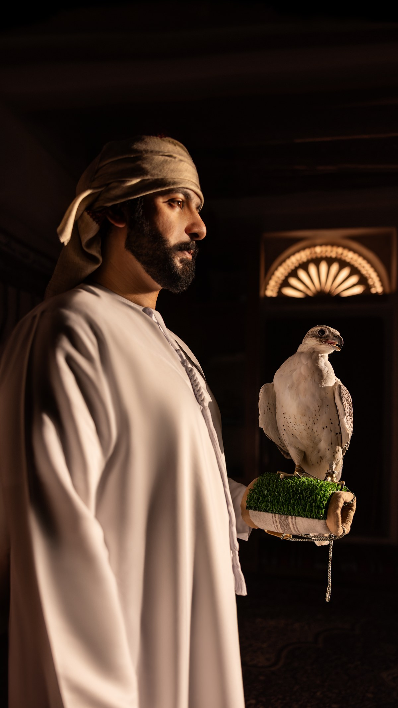
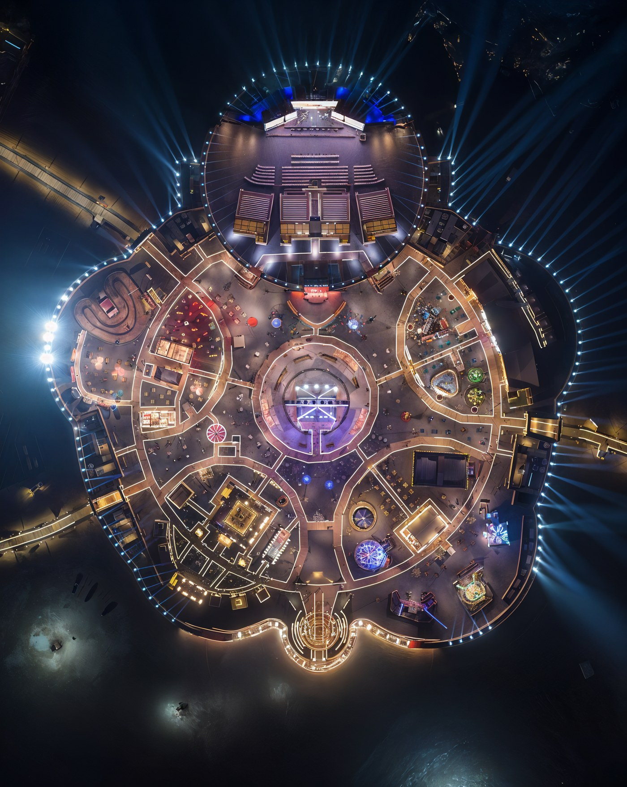
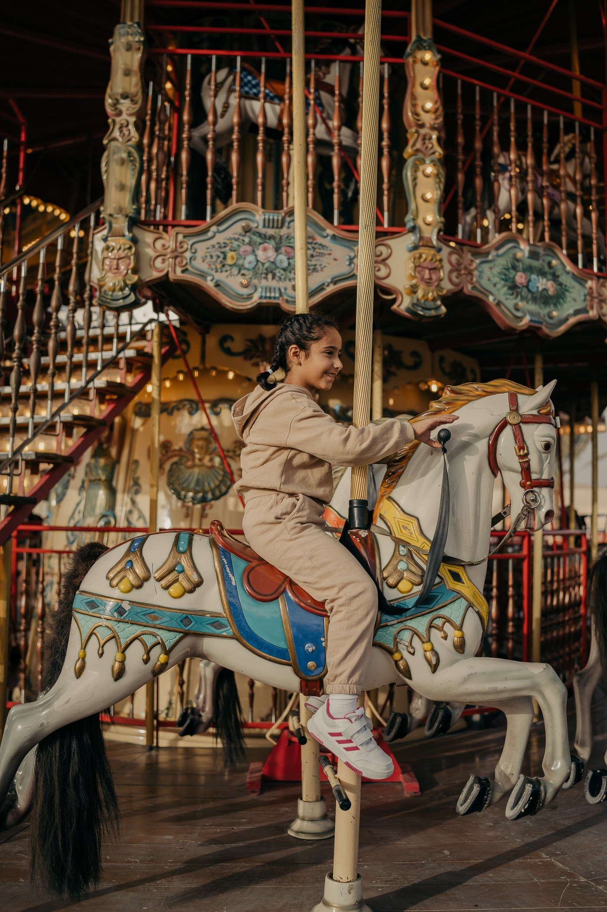
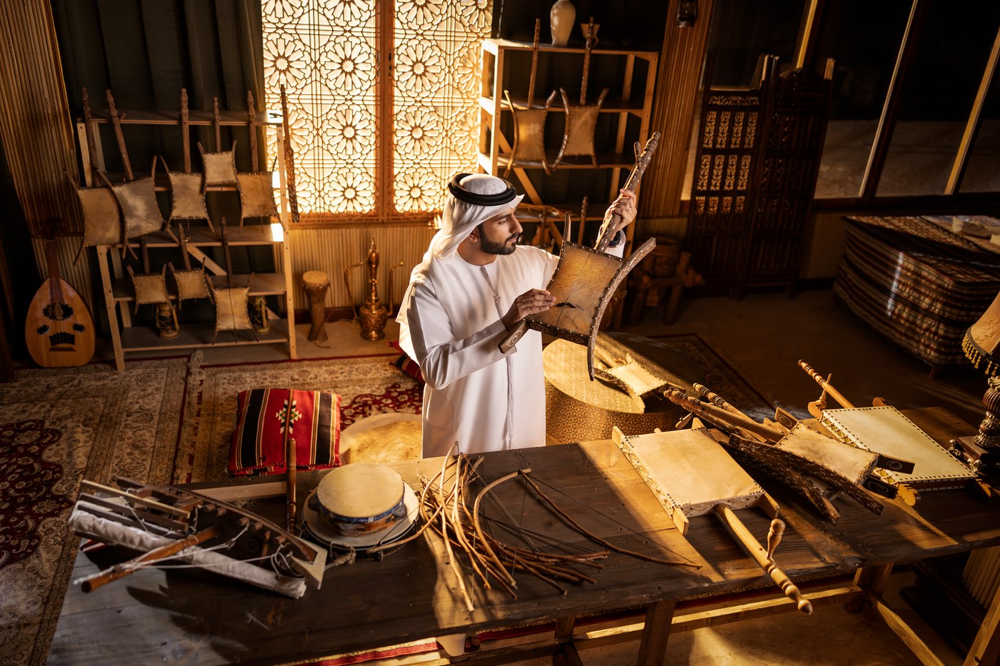
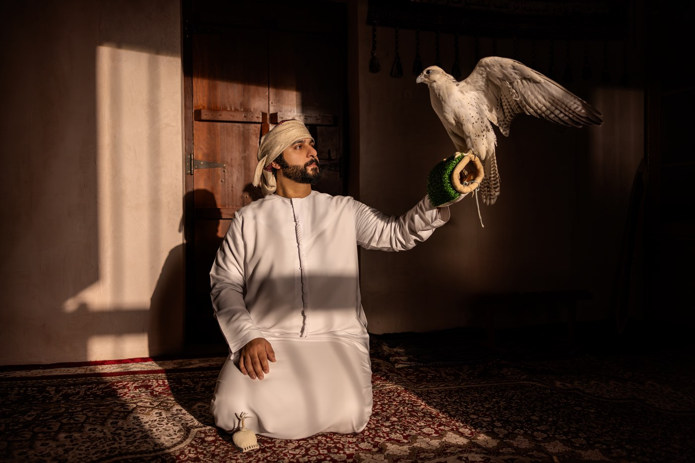
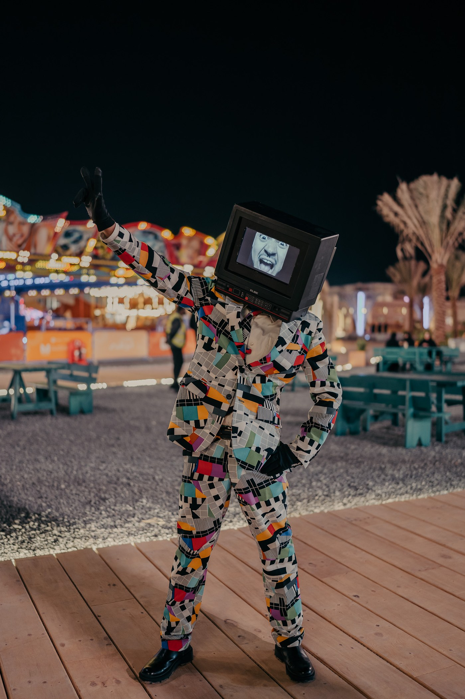
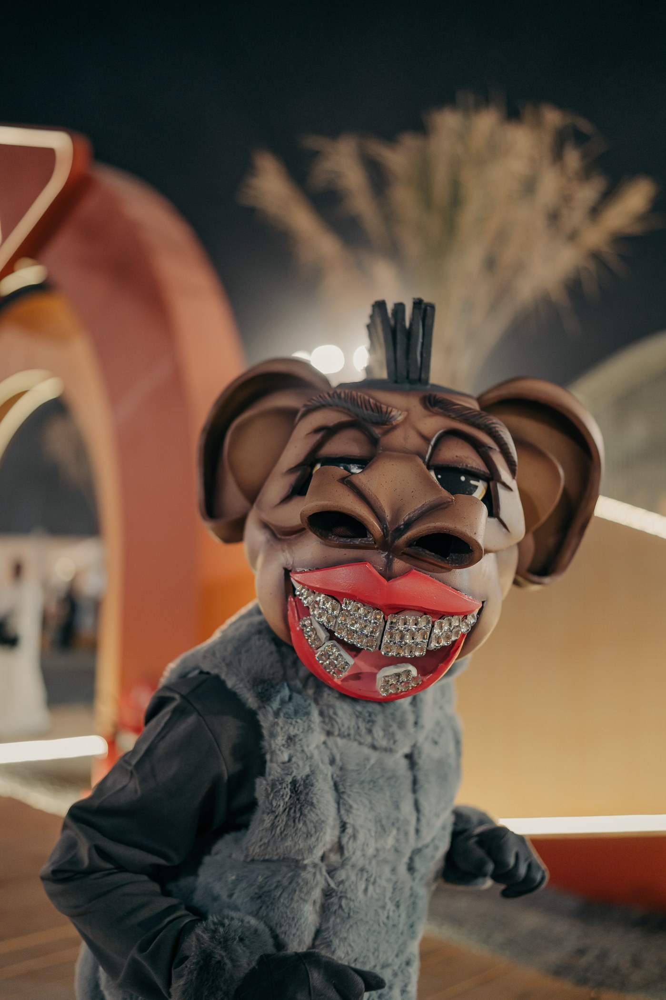
We don't just deliver — we analyse, reflect, and improve. Every season makes us sharper. Here's what our data and experience have taught us.
Our highest-performing videos consistently featured aerial drone footage and content involving children. Single reels hit 2.6M and 1.8M views respectively — a formula we'll scale in 2026-27.
5 posts per day and an average of 12 reels per week produced a 20.7% page growth in just 4 weeks, with 57.94% of engaged users being non-followers — proving the reach potential is enormous.
Visitor feedback videos consistently outperformed polished announcements — human voices and real stories resonate and drive shares far more than branded posts.
~63% of followers are UAE-based. We know the next frontier: the wider GCC and MENA region, where cultural affinity for Liwa's heritage content is high and the audience is largely untapped.
The Village's audience is family-first — parents, kids, and community groups. Content built around genuine family moments consistently outperformed here, which is exactly why a dedicated, family-focused account works.
Our seasons taught us that the Village audience responds most to warm, authentic, family-and-heritage content — a distinct voice from the Festival's high-energy feed. That insight shapes how we plan @LiwaVillage's content for 2026–27.
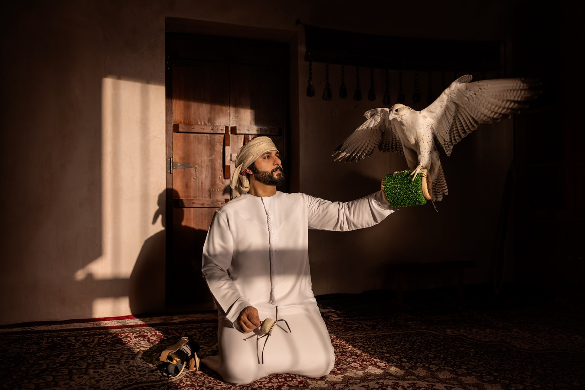
A snapshot of how comparable festivals and desert events position themselves across social platforms — from regional UAE peers to the global benchmarks the category looks up to.
A large multi-month cultural and entertainment festival at Al Wathba, Abu Dhabi. Known for nightly events, cultural pavilions, and family programming, with a heavily Arabic-first content approach and broad regional appeal.
A music, camping, and experiential festival with a younger, community-driven audience. Strong on lineup reveals, lifestyle and crowd-energy content, and user-generated moments from attendees.
An FIA/FIM world-championship cross-country rally held in the Abu Dhabi desert. Known for international motorsport credibility and athlete-driven storytelling, with social built on race action and driver profiles.
One of the region's largest family-entertainment destinations. A high-volume, consistent daily content operation across pavilions, dining, and shows, with strong bilingual reach and family-oriented programming.
The world's most renowned off-road endurance rally. A global production benchmark: cinematic stage films, daily highlight packages, and a large international following built on extreme terrain and human-endurance narratives.
A season of cultural, music, and heritage events in AlUla, Saudi Arabia. A best-in-class desert-destination reference: cinematic visuals, celebrity and influencer activations, and content targeted at an international travel audience.
Our read of the landscape, based on public profiles and each event's reputation in the category — and what it suggests for Liwa's 2026–27 direction.
Global Village and Sheikh Zayed Festival appear to lean heavily on consistent family and lifestyle content — the kind that builds a broad, returning audience. That is exactly the audience @LiwaVillage is built to own — a dedicated home for family and heritage content.
Global Village and Sheikh Zayed Festival set the bar for family and cultural storytelling that builds a loyal, returning audience. It's a useful reference for the warmth and consistency we aim for on @LiwaVillage — authentic, family-first, and built for repeat visits.
AlUla Moments is known for scaling reach through celebrity and influencer activations aimed at an international audience. It suggests a model @LiwaVillage could draw on to grow beyond a purely local base — reaching GCC families and culture-seeking travellers.
Based on public profiles, most of the field leans on polished promotion over authentic, human heritage storytelling. With an Emirati native voice and genuine access to the Village's craft, food, and community, this is a space @LiwaVillage can own.
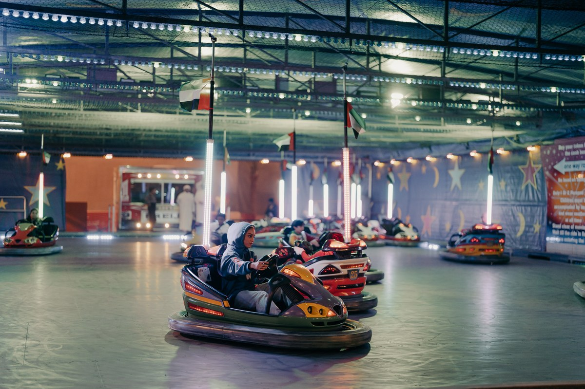
Everything we've learned across two seasons points to four clear priorities for 2026–27 — each met by a specific, deliberate set of actions.
With a UAE-heavy following built in one season, the Village's biggest opportunity is deepening loyalty at home — turning the 270K+ real-world visitors into a returning online community, then extending to GCC families.
The Village is Liwa's family and community hub — but that story needs a dedicated voice to land. A focused account lets us speak directly to families, parents, and children rather than competing with the Festival's high-energy feed.
Coverage has leaned on promotion over participation. The audience's own voice is the most underused asset we have — and the most powerful driver of genuine engagement.
Highlight reels alone don't build a year-round following. Varied formats keep the audience engaged between editions — sustaining awareness long after the gates close.
The connecting thread: @LiwaVillage carries the intimate story of Liwa — family, heritage, and community — a voice the Festival account can't replicate, with each objective feeding the next.
The Village answers to two audiences: the families it wants to welcome, and the partners and stakeholders whose investment makes it possible. Each is spoken to deliberately — because each is essential to the Village's success.
Content that turns online attention into a family day out — the atmosphere, the moments, and the reasons to make the trip.
Content and reporting that demonstrate the Village's reach and impact — the evidence that keeps sponsors invested and attracts the next ones.
Two audiences, one seamless feed: partner and sponsor moments are integrated naturally into the storytelling — adding value without ever interrupting the experience visitors come for.
From mobilization to amplification — a continuous operation built around the festival, not bolted on to it. Each phase carries its own content focus.
Strategy, content calendar, account reactivation, announcement film, and shot planning — before anyone else has started.
Zero ramp-upContent: teasers, countdowns, lineup and attraction reveals, and heritage build-up storytelling to grow anticipation.
Hype & reachContent: real-time stories, daily highlight reels, spokesperson-led coverage, and zone-by-zone capture — same-day delivery with 24/7 community management in Arabic & English.
Daily deliveryContent: recap films, best-of compilations, audience-retention posts, and the year-round drip — plus performance reporting to close the loop.
Sustain & reportFor 2026–27 we're committing to clear targets — set conservatively against a proven baseline. These build on what @LiwaVillage delivered in its dedicated season, so every number is grounded in results we've already achieved.
After a season folded into the Festival account, @LiwaVillage deserves its own voice again — a dedicated home for the family, heritage, and community story that 270K+ visitors come for. This is our proposal to bring it back, bigger.
The heart of the festival deserves a channel of its own. A dedicated account, an authentic Emirati voice, and a team that already knows every corner of the Village — from the Souk to Shams Liwa.
@LiwaVillage is the intimate, community-facing account — the home for family, heritage, dining, and village life. Where the Festival account carries scale and spectacle, the Village account carries warmth and belonging, told in an authentic Emirati voice. A dedicated account is what lets that distinct story reach the families it's made for.
Content that goes beyond the highlight reel — stories that build a real community around Liwa, year after year.
The Village isn't a collection of zones to document — it's a story to tell. A story of families gathering, of heritage kept alive, of a community in the desert. We treat every reel, post, and frame as a chapter in that larger narrative, built on three instincts.
We lead with the families, craftspeople, vendors, and visitors whose moments make the Village human — and shareable.
The Village itself is part of the story — the Souk at golden hour, the warmth of a busy family evening, the desert beyond. We shoot it as a presence, not a backdrop.
We don't just capture what happened — we frame why it mattered, turning a child's first ride or a quiet heritage scene into something that resonates.
Every piece of content ladders up to one of four pillars — the framework that keeps the feed varied, on-brand, and balanced.
Emirati craft, traditional lifestyle, and authentic cultural activations — told in a native voice, the identity that anchors the Village.
Live performances, interactive attractions, and the Wanasa, Adrenaline & Tahadi zones — the everyday energy that keeps families coming back.
The Souk, dining, retail, rides, and family zones — the curated hub experiences that turn a visit into a full day out.
Visitor voices, family moments, and real reactions — the participation-led content that builds the Village's sense of belonging.
Our content approach leads with short-form vertical video built for TikTok and Reels, supported by spokesperson-led storytelling that gives the festival a recognizable on-screen voice. Every format is produced bilingually in Arabic and English, and shaped for the platform it lives on rather than cross-posted flat.
Each platform earns a tailored approach — not the same post pushed everywhere. Here's what leads on each.
TikTok is the Village's strongest channel — 15M views in its dedicated season prove it. Here's how we plan, produce, and grow it deliberately, not by chance.
We monitor trending sounds, formats, and challenges daily and adapt the Village's content to ride them while they peak — turning everyday village moments into native, of-the-moment TikToks.
Short-form thrives on frequency. We post multiple times daily, front-loading the moments families love most — rides, performances, food, and heritage — when engagement peaks.
Family, food, and Emirati-culture creators extend reach into new communities, with duets and stitches amplifying the Village's most relatable content.
Posting is scheduled around proven high-activity windows — especially evenings and weekends when families plan and share their visits.
The formats below bring those four pillars to life — each one mapped to the audience and account it serves best.
Short, on-the-spot testimonials captured with real visitors — families, first-timers, returning guests, and the vendors and artisans who make the Village. Authentic, unscripted reactions that build credibility and show the Village through the eyes of those who live it.
Short, on-the-ground interviews with visitors, families, local residents, and the Village's artisans and vendors. Real reactions and authentic stories — the relatable, highly shareable content that builds community and surfaces the audience's own voice.
Short documentary-style reels exploring Emirati heritage, craft, and the cultural depth of the Village — the traditions and stories that give it its soul.
Content told from a family's perspective — kids on the rides, families exploring the Souk, parents making memories. The everyday magic of the Village, seen by the people who live it.
A structured strategy to surface and amplify user-generated content from visitors — the most underutilised asset in the previous seasons. Real people, real reactions, real credibility.
Immersive, ASMR-style short-form: the buzz of a busy Souk, sizzling food stalls, children's laughter, traditional music, and the hush of the desert at dusk. Distinctive, deeply on-brand sensory content that stops the scroll and feels unmistakably Liwa Village.
The direction and production standard we're aiming for @LiwaVillage, shown through real examples — every reference is tagged to an RFP content pillar. Tap any card to view. Polished = cinematic/high-edit · UGC = audience/organic.
References that apply across both @LiwaFest and @LiwaVillage — the cross-cutting formats we build on for the Village.
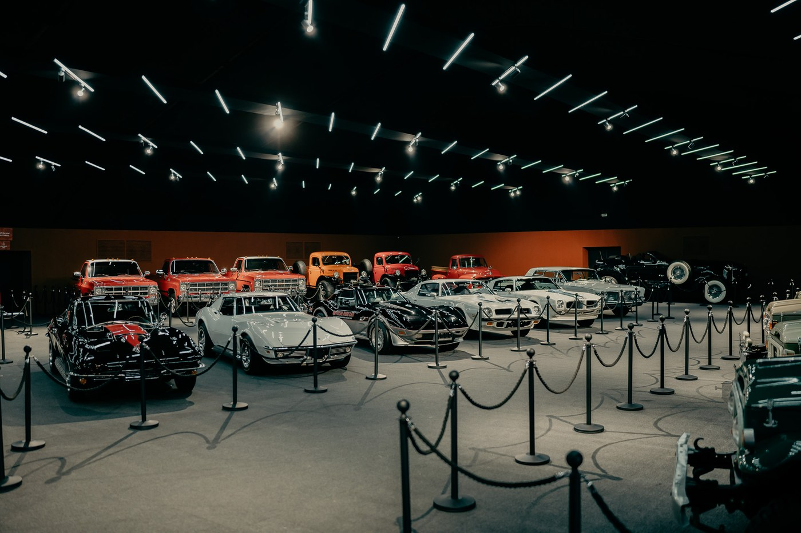
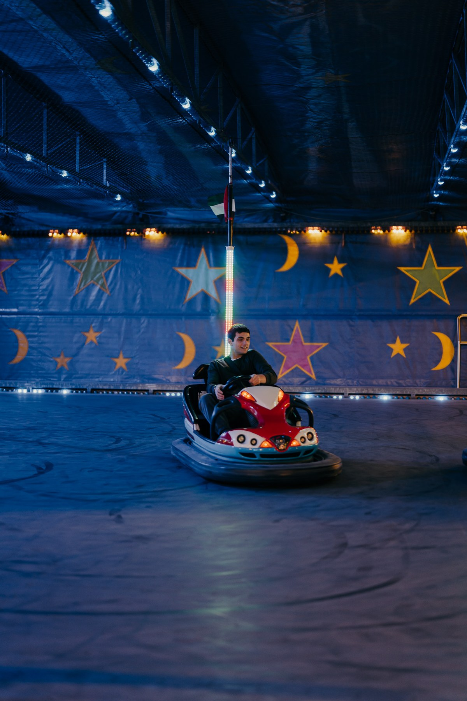
We've already started working on next year. A complementary announcement video — crafted to set the tone for Liwa 2026–2027 — is included as part of this proposal.
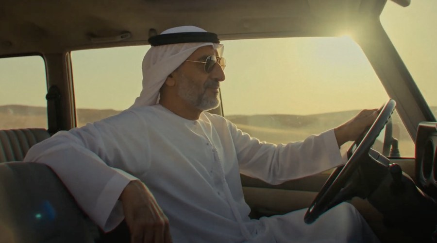
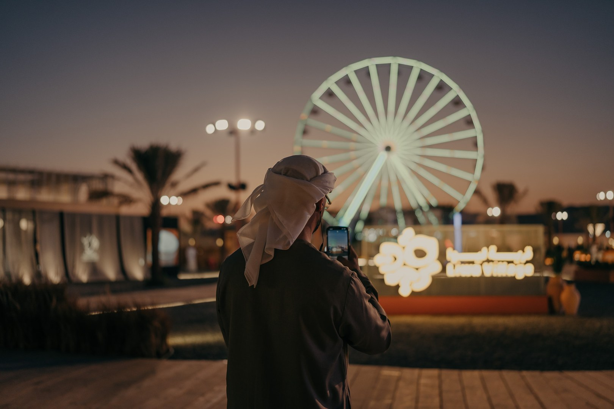
Three years at Liwa means we know this event from the inside out — the DCT protocols, the permit process, the approval chains, the key zones, the lighting conditions at every hour, the logistics of moving a 31-person team across the desert, and the moments that matter most. No ramp-up. No learning curve. Just results from day one.
We've filmed every zone, every activity, every weather condition Liwa has to offer. We don't discover the grounds — we own them.
We built this audience from scratch. We know what they love, when they engage, and how to keep them coming back year after year.
Not a team assembled for one job — a team that's done this together. Communication, roles, and trust are already in place.
We have never missed a deadline. Never failed to deliver same-day content. Never lost a day to logistics. That's our track record.
We've spent three years building working relationships with the festival's directors and DCT coordinators. We understand the protocol, the sensitivities, and the chain of approvals. A new team would need an entire season just to get there.
The best angle for the Moreeb Dune launch. The golden hour light over the Village. The hidden paths between zones. The ideal positions for drone clearance. This knowledge took years to build — and it's already ours.
While other agencies would spend their first week finding their feet, we arrive ready. Day one is a full operation, not a trial run. For a 23-day event, that head start is invaluable.
Every season we've sharpened our craft — deeper data insight, sharper content instincts, and a clearer understanding of what moves the Liwa audience. Each year we learn, and each year we bring that learning back to the festival.
Graphite Studio × Liwa Village
We've spent three years earning this moment. The team is assembled, the strategy is set, and we know the Village's story better than anyone. Let's make @LiwaVillage 2026–2027 its strongest season yet.